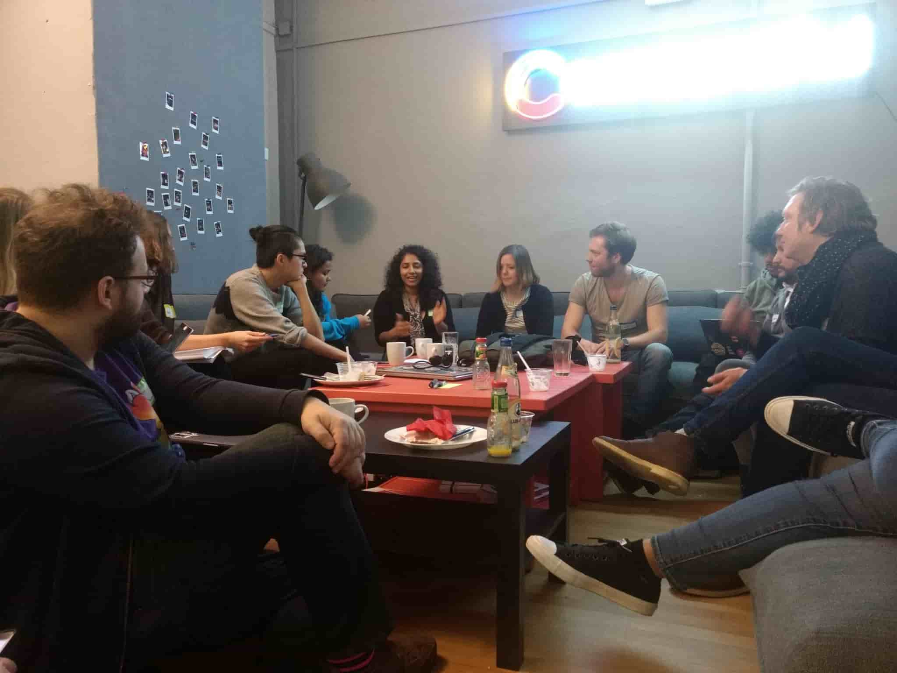

Today I attended the
Global Diversity CFP Day – Berlin style. There were
13 amazing mentors and over 20 students – all of us hosted by the awesome
Stefan Judis and Irina Botea in the Contentful offices. The day was pre-planned for us by the great
Peter Aitken. We watched inspiring educational videos,
had discussions and completed exercises. The exercise which struck the biggest chord with the participants
was the one on use of exclusionary language within public speaking, and how we can work to be much more inclusionary.
Two groups of around 15 people discussed and wrote their ideas down so they could be presented to everyone.
Here were the things (formatted as
issues) that my group discussed:
Issue #1: general language use
- Words like ‘sexy’ or ‘crazy’ can make people uncomfortable, because the use of such words varies greatly
across cultures and languages. Words like these that might seem low-level offensive or part of everyday
conversation for some may be taboo and highly offensive to others. There is no way to tell if such words
will be received as derogatory, so they should not be used.
- Swearing can also make people uncomfortable.
Issue #2: addressing people in the audience
- Even a seemingly neutral greeting such as “hey guys!”, which is appropriate in many but not all places, may
confuse audience members, especially if English is not their first language.
- When you address people, try to do so in a way that includes everyone, for example “hey everyone!”.
- Women are not “girls”, just as men are not “boys”.
Issue #3: jokes
- There are some jokes you may wish to include in your talk that seem normal to you, or that you may be desensitised
to. However, there is no guarantee that everyone in the case for everyone in the audience.
- Dry jokes (i.e. ‘dad’ jokes) that do not belittle or offend others in any way are usually acceptable, but
conference organisers should always be informed. This is because the organisers of a conference or any
public speaking event are the ones who know the audience best. They are the people to go to for discussing
any jokes you wish to use.
- Jokes should build people up, but never knock them down.
- Don’t joke about other people's job titles, tech stack, or anything else. Never try to make yourself look
good by belittling others.
- Don’t translate jokes from your native language into the target language of the event.
- Jokes that are designed to make fun of yourself, in an acceptable self-deprecating way, may be okay.
Always check with the event organisers as there may still be people who will not understand such
jokes.
Issue #4: potentially offensive material in your talk
- As mentioned above, it is a great idea to discuss potentially offensive material in your talk with the event
organisers before you present it to your audience.
Issue #5: stereotyping
- Sterotyping may delight some audience members and offend others.
- Leave it out of your talk altogether.
- Never assume anything about other cultures.
Issue #6: sexualisation of speakers or audience members
- This is
never appropriate! There have been highly publicised cases of this, but it unfortunately still happens.
Issue #7: not knowing whether you’ve made the audience uncomfortable
- Be open to feedback!
- Present yourself as approachable!
- On your last slide you could, for example, add some information that would give your audience the chance
to provide anonymous feedback on any aspect of your talk. Also tell people they can approach you with
feedback, but keep both options open for those who are more comfortable remaining anonymous.
Issue #8: leaving out attendees
- This is a point for both speakers and all other people present at a speaking event – if you see someone looking
lost or left out, ask if they need help, or invite them into your circle to join the discussion you are
having.
Issue #9: audience knowledge levels
- While giving your talk, ask your audience about their experience levels or what technology they have used
before. This way, you can direct your talk content to focus more on what is relevant to those listening.
Issue #10: advanced vs. beginner
- Be aware of the curse of knowledge!
- When talking about a topic you know very well, you may leave out information that is relevant for beginners.
- Do not feign surprise when the person you’re talking to knows nothing about your topic, as this can be condescending.
- Do not assume someone’s level of knowledge.
Issue #11: complexity
- Use the rule of least power in your talks – i.e. use the simplest language possible that will still convey
the lessons or message you wish the audience to take away. This means make your talk as complex as it
needs to be, but not more.
- Being able to explain a complex topic in a simple or novel way is an indicator that you, as a speaker, really
understand the topic itself.
Issue #12: exerting your privilege
- Be aware of any privilege you may have, and be careful when talking about how much it benefits you.
- You may, for example, want to talk about how great it is to be a digital nomad, spending time in lots of
different countries while freelancing. However, it is good to be mindful that some of the people in your
audience will not be able to do this because of visa issues.
- Sometimes you may be able to help out less privileged people. For example, if a conference accepts your talk
proposal and offers to pay for your flights and hotel, but your workplace has already agreed to pay,
then contact the organisers and ask them to offer your flights and hotel (and a ticket) to someone who
can’t afford it.
Issue #13: colour-blindness and contrast
- For accessibility purposes, test the colours and contrast of your presentation before speaking. There are
many tools for this. Here is one:
lowvisiontools.barrierbreak.com.
Issue #14: distracting aspects
-
Be aware of and limit use of flashing, GIFs, complex or messy slides and laser pointers.
These were all of the issues my group covered, although if we’d had more time, there’d definitely be more!

^ group discussion :-)
I hope the issues we raised seem relevant to the topic of inclusionary and exclusionary language and practices
involving public speaking. Please message me with any of your comments or own ideas!